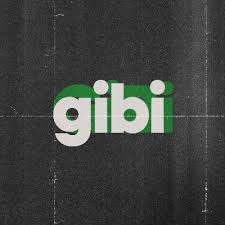
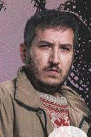
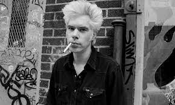
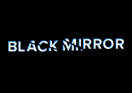
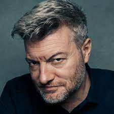

Absurd Comedy, Drama
As if
Yilmaz and Ilkkan are two friends who are constantly fighting each other. Their greatest feature is always being able to do something that will turn their ordinary lives upside down.

One Years Ago

Adventure, Comedy, Drama
Coffee and Cigarettes
Coffee and Cigarettes is the title of three short films and a 2003 feature-length anthology film by independent film director Jim Jarmusch. The feature film consists of 11 short stories which share coffee and cigarettes a s a common thread.

18 Years Ago

Dystopie, Science Fiction
Black Mirror
Black Mirror is a British anthology television series created by Charlie Brooker. Individual episodes explore a diversity of genres, but most are set in near-n technology—a type of speculative fiction.

8 Years Ago